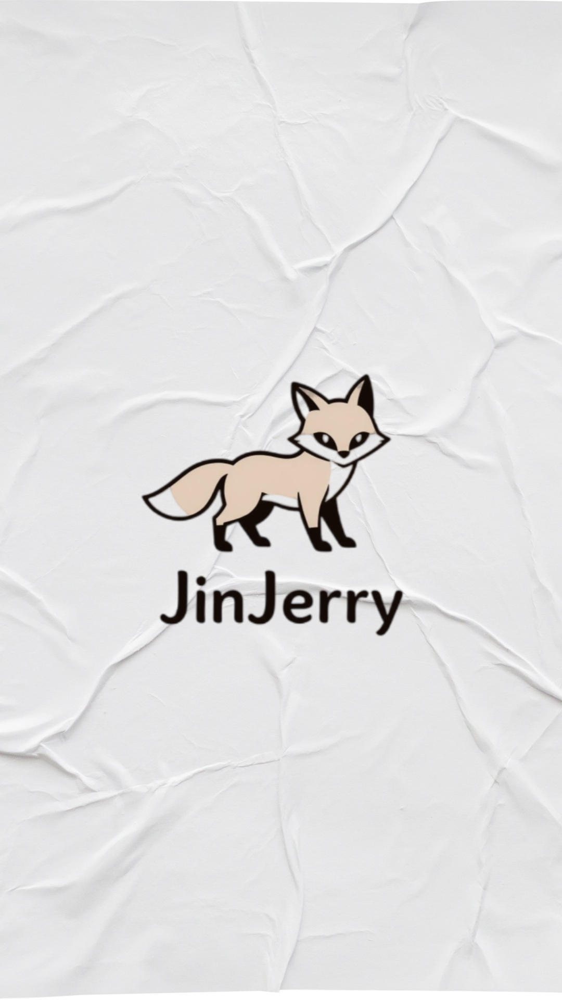
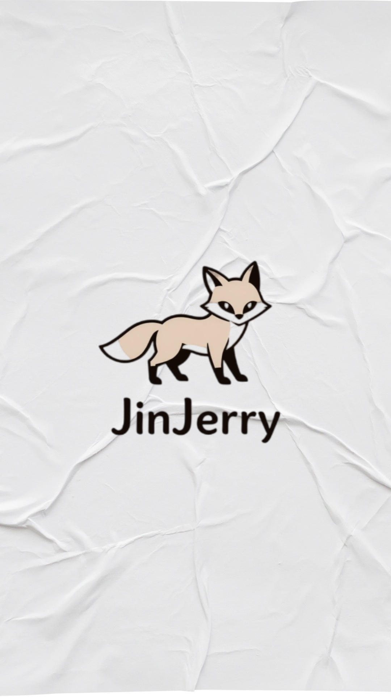

JinJerry GameLand
Jinuk James Lee를 줄여 JinJerry로 칭한 이 행복한 인물은 개발 및 편집 활동을 연습중입니다

최근에 생활코딩님을 참고하여 HTML, CSS, JS를 배우는 중이고, 취미로는 CapCut을 활용하여 유튜브 쇼츠를 편집중입니다
Jinuk James Lee를 줄여 JinJerry로 칭한 이 행복한 인물은 개발 및 편집 활동을 연습중입니다

최근에 생활코딩님을 참고하여 HTML, CSS, JS를 배우는 중이고, 취미로는 CapCut을 활용하여 유튜브 쇼츠를 편집중입니다